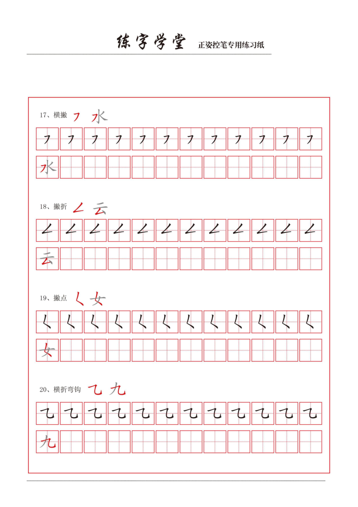
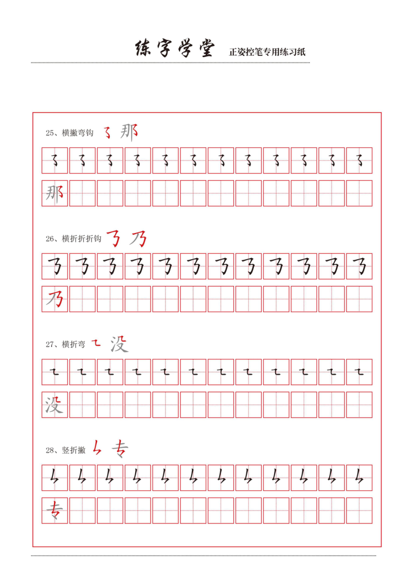
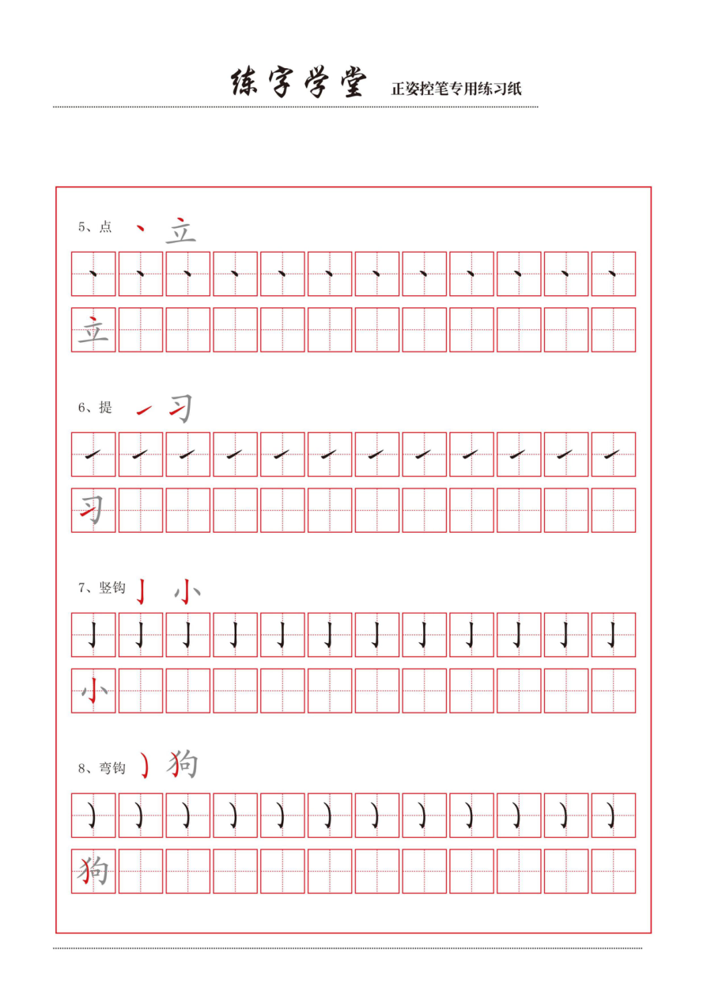
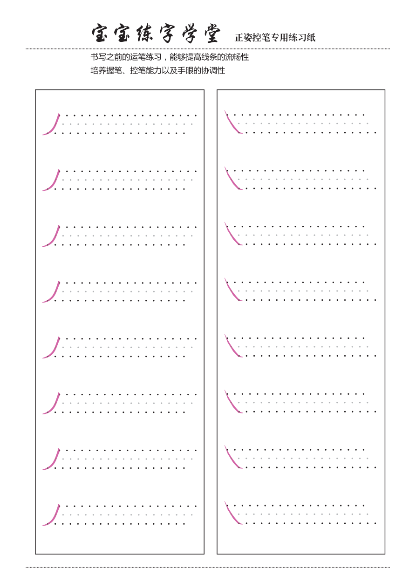
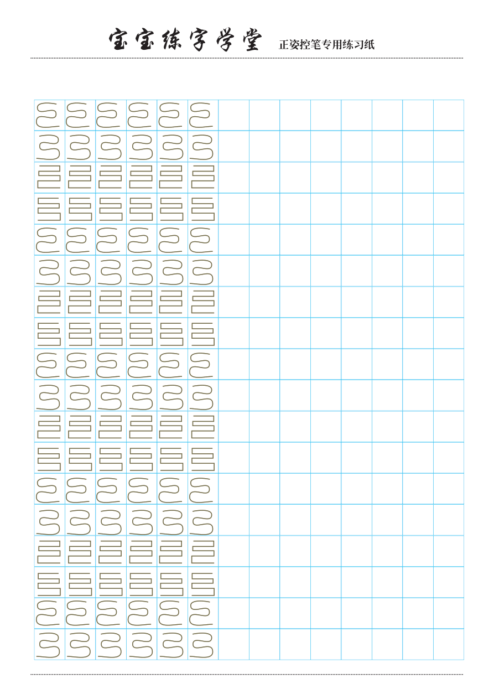

幼小衔接控笔训练，每天10分钟练好写字基本功
很多家长发现，孩子上小学后写字歪歪扭扭、笔画写不直、写字特别慢，其实根本原因不是"不认真"，而是控笔能力没跟上。
控笔就是手指、手腕协调控制笔的能力，就像学骑车要先学平衡一样，学写字必须先练控笔。每天花10分钟练一练，比直接逼孩子写字效果好得多。
今天分享两套控笔练习资源，一套是笔画练习，一套是系统控笔训练合集，打印出来就能用。
一、控笔笔画练习（8款，8页）
这套练习包含了8种不同风格的笔画练习，从最简单的横线、竖线，到波浪线、折线、螺旋线等，难度逐步提升。

基础线条练习，让孩子找到运笔的感觉

波浪线、折线等组合线条，提升手腕灵活度

多种图形组合练习，为写汉字打基础
线条从直到曲、从简单到复杂，孩子每天练一两页，不出两周就能明显感觉到下笔稳多了。
二、控笔训练合集（12页）
这套更系统，包含了握笔姿势指导、横线控笔、竖线控笔等专项训练，每页都有明确的训练目标。

正姿控笔专用练习，先纠正姿势再练线条

横线、竖线基础控笔训练
练习设计得很科学——先用虚线让孩子描，再自己独立画，和写字的"描红→临摹→独立写"是一个道理。
控笔训练建议
- 姿势第一：坐姿和握笔姿势决定了写字耐力，姿势不对写一会儿就手酸
- 从大到小：先练大幅度的线条（手腕发力），再练小幅度的精细控制（手指发力）
- 每天10分钟就够了，关键是坚持不断
- 不急着上汉字：控笔练好了，写字进步会快很多
- 趣味化：可以让孩子用彩色笔画，或者在画好的图形里涂色
资源下载
以上所有资料已经整理好放在夸克网盘，直接保存即可打印。
两份资料都建议保存，笔画练习适合入门阶段，训练合集适合系统提升，搭配使用效果最好。